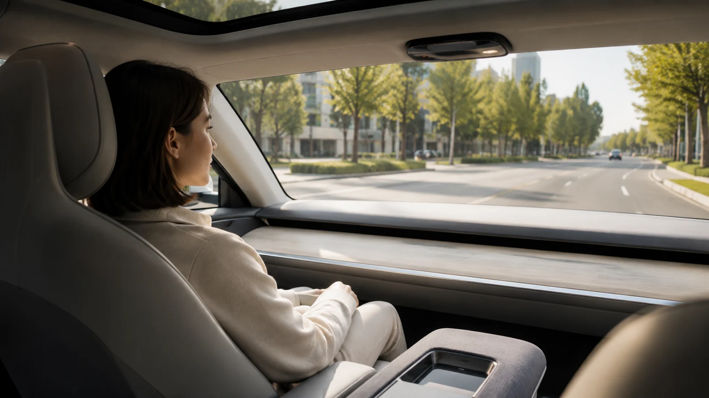
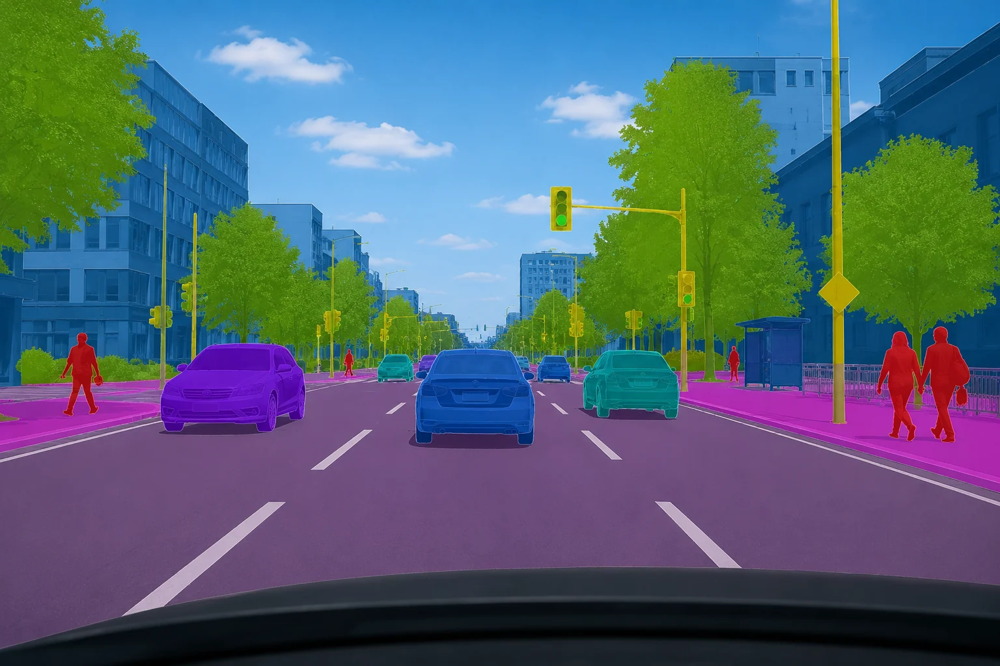
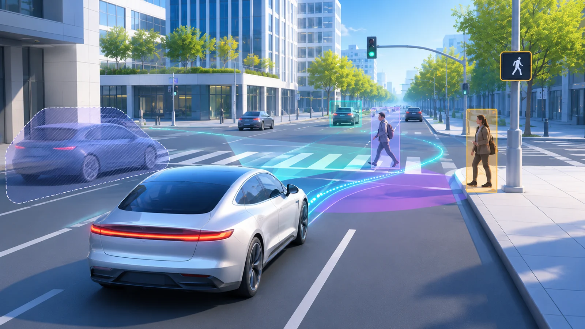

HELLO, I'M DINUSHAN —
Thinking
human.
Building
better.
HCI researcher. Creative technologist.
I design, build, and evaluate interactive systems that bring people and technology closer together — from immersive VR to intelligent interfaces.

Selected work.
A selection of projects where curiosity becomes experiments, prototypes, and evidence.

VR / EXPERIMENTAL HCI
Vehicle motion simulation in virtual reality
Master’s thesis — Studying immersive vehicle-motion experience and interaction.

HUMAN–AI / AUTOMATION
Calibrating trust in automated driving
Research into adaptive visualisations and users’ trust in driving automation.
COGNITIVE LOAD / EYE TRACKING
Measuring cognitive load in immersive environments
Comparing subjective and physiological workload measures across environments.

UNITY / RESEARCH PROTOTYPING
Building a trust-calibration research prototype
Designing and implementing an interactive study environment for automated driving.
Research is
in the details.
I work across experimental HCI, interaction design, and software engineering — translating research questions into experiences people can actually use.
Immersive experiences VR / XR / SIMULATION
Studying presence, motion fidelity, cognitive demands, and interaction in virtual environments.
↗Human–vehicle interaction HUMAN FACTORS / AUTOMATION
Exploring how people experience, understand, and interact with increasingly intelligent vehicles.
↗Designing & building systems PROTOTYPING / FRONT-END / UNITY
Connecting interface design and research engineering, from working prototypes to structured studies.
↗RESEARCHER BY CURIOSITY. DESIGNER BY INSTINCT.
I care about the why as much as the how.
I'm Dinushan Meeriyagalla, an MSc Cognitive Systems student at Ulm University specialising in Human–Computer Interaction.
Before diving into research, I worked in front-end engineering and digital design. That combination shapes how I work today: design with purpose, build with care, and evaluate with evidence.
More about my experienceThinking, in words.
Selected academic writing exploring human behaviour, intelligent systems, and technology.
“Creative, quick to learn, and strong in both design and web development.”
“Proactive, easy to work with, and always eager to learn new things.”
“Combines creativity, technical skill, and strong teamwork across web, email, and marketing projects.”
“Delivered high-quality work with both design thinking and technical understanding.”
“Consistently created eye-catching newsletter layouts while meeting deadlines.”
“Collaborative, friendly, and skilled in UI/UX work.”